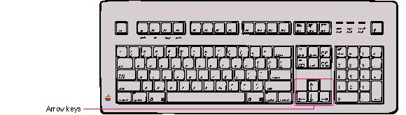

|
Arrow KeysSome Macintosh keyboards include four arrow keys: Up Arrow, Down Arrow, Left Arrow, and Right Arrow. These keys are shown in Figure 10-12. Appropriate Uses for the Arrow KeysAs a general rule, arrow keys are used to move the insertion point and, when used with the Shift key, to extend or shrink selections. The guidelines in this section apply both to moving the insertion point and to making selections. They are the minimum guidelines for arrow keys. You may expand these guidelines if you need to, keeping in mind their spirit.Arrow keys are never used to duplicate the function of the scroll bars or to move the mouse pointer. They may be used as a shortcut to move the insertion point and, under some circumstances, to make selections. An application should use the arrow keys only when appropriate to the task. Applications that deal with text or arrays, such as word processors, spreadsheets, and databases, have an insertion point. This insertion point could be moved both by the mouse and by the arrow keys. If the user makes a selection and then presses the Right Arrow or Left Arrow key, your application should shrink the selection to zero length and place the insertion point at the right or left edge of the selection. This action doesn't move the location of the selection. In a graphics application, the arrow keys can be used for fine movement of selected objects, particularly since graphics applications typically have no insertion point. If a graphics application uses arrow keys, it should be only to move the selected object by the smallest possible increment (one pixel or one grid unit). For example, the user could select an object and use the arrow keys to move one pixel per keystroke in the direction of the arrow key pressed. Generally, graphics applications shouldn't use arrow keys to change a selection or use modifier keys to multiply the effect of arrow keys. (Note that the Finder uses arrow keys to change the selection.) Moving the Insertion PointThe Left Arrow and Right Arrow keys move the insertion point one character left and right respectively. Up Arrow and Down Arrow move the insertion point up and down one line respectively.During vertical movement of the insertion point, horizontal screen position is maintained in terms of screen pixels, not characters. (Character boundaries seldom line up vertically when proportional fonts are used.) When the insertion point moves to a new line, move it slightly left or right, to the nearest character boundary on the new line. During successive movements up or down, the application should keep the insertion point as close as possible to the original horizontal position as it moves from line to line. Moving the Insertion Point in Empty DocumentsVarious text-editing programs treat empty documents in different ways. Some assume that an empty document contains no characters, in which case clicking at the bottom of a blank screen causes the insertion point to appear at the top. In this situation, Down Arrow cannot move the insertion point into the blank space because there are no characters there.Other applications treat an empty document as a page of space characters, in which case clicking at the bottom of a blank screen puts the insertion point where the user has clicked and lets the user type characters there, overwriting the spaces. In this sort of application, Down Arrow moves the insertion point straight down through the spaces. Whichever of these methods you choose for your application, it's essential that you be consistent throughout. Using Modifier Keys With Arrow KeysIn some cases it's appropriate to use modifier keys such as Option and Command to extend the action of moving the insertion point in a document. This allows users to move the insertion point using keyboard combinations as an alternative to the mouse. Keep in mind that these keyboard combinations are only shortcuts for mouse actions. It is optional to extend these behaviors to applications but it is never appropriate to implement only a keyboard shortcut and not provide a mouse-based way to perform the same action.You can support using modifier keys with arrow keys to move the input focus, extend a selection, or move objects. The most common uses of these keyboard combinations are to extend selections and to move the insertion point. The paragraphs that follow suggest typical uses for modifier key-arrow key combinations. The Option key and the Command key are both used as semantic modifiers with the arrow keys. A semantic modifier changes the semantic unit that the arrow keys affect. The application determines what the semantic units are. For example, in word-processing applications, semantic units are characters, words, lines, paragraphs, and documents. In general, the Option key increases the size of the semantic unit by 1 compared to the arrow keys alone, and the Command key enlarges the semantic unit again. Table 10-2 shows how the Option key and Command key could change the effect of arrow keys in a word-processing application. If there aren't any paragraphs or an additional
paragraph marker after the insertion point in the document,
then Option-Down Arrow can't move the insertion point to
its end. In this case, you should map Option-Down Arrow to
have the same action as Down Arrow. For example, if the
insertion point is already at the end of the document and
the user presses Option-Down Arrow, play the system beep to
call the user's attention to the position of the In an application (such as a spreadsheet) that represents data in an array, the basic semantic unit would be the cell. Option-Left Arrow (or Option-Right Arrow) would designate the cell to the left (or right) of the currently active cell as the new active cell. Using modifier keys with arrow keys doesn't change the data; Option-Left Arrow just causes the data to be entered and moves the selection to the next cell to the left. Though the use of multiple modifier-key combinations
(such as Command-Option-Left Arrow) is discouraged, it's
all right to use the Note that for non-Roman script systems, Command-Left Arrow and Command-Right Arrow are reserved for changing the direction of keyboard input. Specifically, Command-Right Arrow changes the keyboard layout to Roman and Command-Left Arrow changes the keyboard layout to the system script. This capability is especially useful for bidirectional script systems such as Arabic and Hebrew since it allows users to change the direction of keyboard input. See Table 4-2 in Chapter 4, "Menus," on page 102 for more information. Also, Command-Shift-Left Arrow and Command-Shift-Right Arrow move the insertion point to the beginning and end of the line, respectively. |
|
|
In all cases, if you can't complete a user action for some reason, provide feedback to indicate this. For example, you can flash the menu bar or play a sound on the first instance of a user action that can't be completed. You can also display an alert box that describes the situation and gives suggestions to the user about what can be done in the current context. |